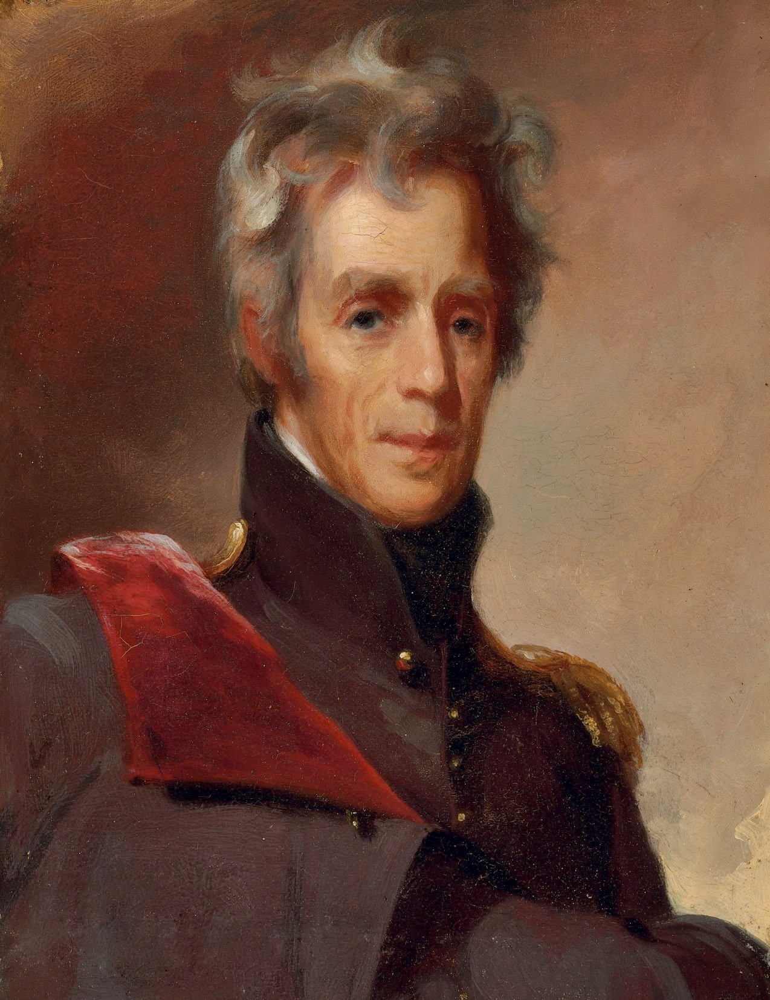

Directions: Fill in the chart as the new democracy takes shape piece by piece. Keep this page in your notebook. You will use it again on the review day before the unit test.

| Piece of the story | What happened | Who gained or lost standing | The evidence |
|---|---|---|---|
| The electorate remade | |||
| The doors that closed | |||
| 1824 and the bargain charge | |||
| The campaign of 1828 | |||
| The inauguration | |||
| Rotation and the party |
Democracy in one sentence. Finish this sentence in your own words, using at least two rows of the chart as evidence. When the common white man got the vote, what changed was...
| Piece of the story | What happened | Who gained or lost standing | The evidence |
|---|---|---|---|
| The electorate remade | State after state in the 1810s and 1820s struck down property and taxpaying limits until by 1828 nearly every white man could vote, and parties built committees and newspapers to organize turnout. | Gained: white men without property | New York removed its property test for white men in 1821, completed in 1826, and turnout in 1828 ran near three times that of 1824. |
| The doors that closed | New Jersey limited its vote to white men only in 1807 after women and free Black men had voted under its first constitution, New York fenced free Black men with a property test in 1821, and Pennsylvania wrote white into its suffrage clause in 1838. | Lost: women, free Black men; outside entirely: Native nations | The closings were enacted by statute and constitution in the same decades as the widening. |
| 1824 and the bargain charge | Jackson led the popular and electoral votes in 1824 without a majority, Clay backed Adams in the House, Adams won with thirteen state delegations on February 9, 1825, and then named Clay secretary of state. | Gained: the Jackson organization, which carried the charge for four years | Both men denied a bargain and no evidence of one has ever been produced; the sequence is documented, the bargain is a charge. |
| The campaign of 1828 | Committees, barbecues, hickory poles, and a party press carried a mass campaign; opponents attacked Rachel Jackson over her first marriage in print, and she died in December 1828 before the inauguration. | Gained: the new voters, courted as the people; lost: Rachel Jackson, in reputation and, her husband believed, in life | Jackson won by a wide margin in the popular vote and the Electoral College. |
| The inauguration | Thousands stood silent and orderly at the Capitol on March 4, 1829, then pressed through the White House reception, breaking glass and china and driving the president out a back way. | Gained: the people en masse, in the president's house | Margaret Bayard Smith, letter of March 1829: it was the People's day, and the People's President and the People would rule. |
| Rotation and the party | The First Annual Message of December 8, 1829 argued office was not property and should rotate among citizens; opponents named the practice the spoils system, and the Democratic Party took lasting shape around Jackson. | Gained: citizens in turn as officeholders; lost: the standing of a permanent officeholding class | Removals ran to some nine hundred of nine thousand civil officers, modest beside the legend the doctrine created. |
Democracy in one sentence. Strong answers join the change to the boundary. When the common white man got the vote, the vote left property behind, parties organized ordinary white men to turn out, and the president they chose declared office open to citizens in rotation, while women, free Black men, and Native nations were kept outside the people the new democracy named.